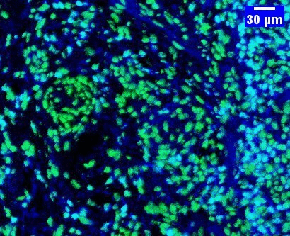
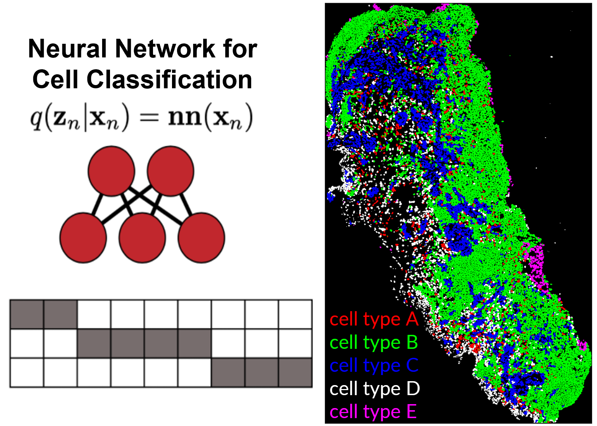
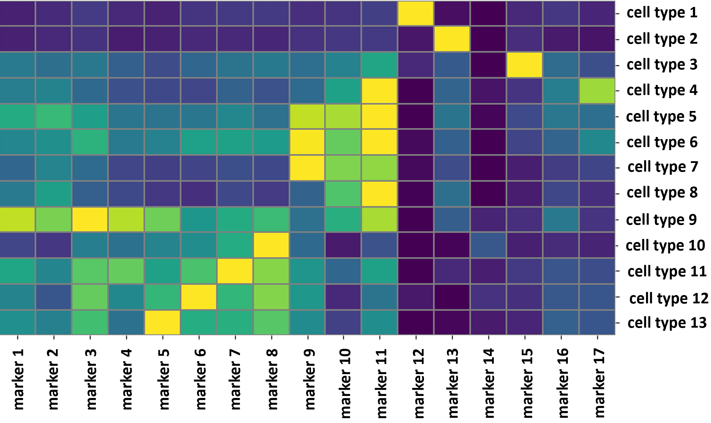
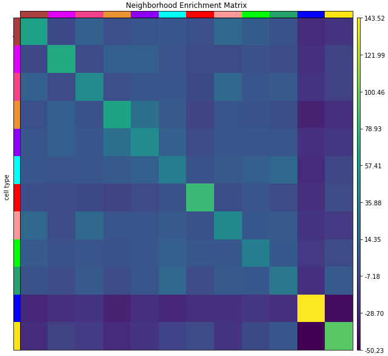

Master's Thesis
Brief overview of the models, algorithms and data analyses I developed during my Master's project.

During my Master's project, I had the opportunity to work with two datasets from a cutting-edge technology called Imaging Mass Cytometry (IMC). IMC has applications in fields such as oncology and immunology research, allowing for in-depth analysis of tissue sections to gain a deeper understanding of various diseases. What sets IMC apart from traditional techniques is its capability to capture signals for as many as 40 parameters (biomarkers) from the same tissue section, resulting in high-dimensional images. The depth of information however also brings challenges in data processing. Therefore, my focus during my Master's was on building a computational pipeline to efficiently process these complex images.
Preprocessing
 Image preprocessing involved overlaying different markers to understand the datasets and how different markers would co-localize with each other. Additionally, it involved applying a mathematical operation to remove artifact signals from the images. This particular operation is known as compensation of spillover and I applied the non-negative linear least squares (NNLS) method to retrieve the real signal, implemented in R programming.
Image preprocessing involved overlaying different markers to understand the datasets and how different markers would co-localize with each other. Additionally, it involved applying a mathematical operation to remove artifact signals from the images. This particular operation is known as compensation of spillover and I applied the non-negative linear least squares (NNLS) method to retrieve the real signal, implemented in R programming.
Cell Segmentation
Cell segmentation is an instance segmentation task where the goal is to classify which pixels in an image correspond to each individual biological cell. Here I fine-tuned a pretrained deep learning model called Mesmer. The model is built using TensorFlow with a ResNet50 backbone. For generating multi-scale feature maps, a Feature Pyramid Network (FPN) is connected to the backbone with four semantic heads, and are used for separate pixel-level predictions.
Segmenting cells can pose a considerable challenge, given factors like image resolution and the close proximity of cells. However, this model was able to generate high quality segmentation masks across both datasets. Over 330,000 cells were segmented for both datasets combined.
Cell Feature Extraction
Utilizing the preprocessed data and cell segmentation masks, I extracted a variety of numerical features from the images into a tabular format. These features are related to cell morphology such as area and diameter, as well as proteomic features computed by the mean expression of each marker (image dimension) within every cell. All features were extracted using the regionprops function of the scikit-image Python package. Prior to feature quantification, the data was windsorized to the 99.9th percentile for outlier removal.
Cell Type Classification (Cell Phenotyping)
The next step in the pipeline was to classify cell types based on the extracted features. Given that distinct cell types exhibit specific protein marker expression patterns, cell classification can be achieved by analyzing the protein marker expression pattern of each cell (marker features). For this purpose, I used a fully-connected neural network model implemented using PyTorch. Input data was normalized by an arcsinh transformation with a cofactor of 5. The model used a leaky ReLU activation function and Adam optimizer with a learning rate of 2e-4. The output of the model was a probability table listing the likelihood of each individual cell being of each cell type of interest.

This process demanded rigorous validation to ensure accurate cell classification. Collaboration with biomedical researchers with expert knowledge was critical, as well as quantifying and visualizing data from many different perspectives. This iterative approach, involving distinct steps for various cell populations, resulted in the successful classification of 23 distinct, spatially resolved cell types.
Neighborhood and Spatial Analysis
The last step in the pipeline was the analysis of spatial patterns and neighborhood interactions between different cell types. This analysis is of significant biological importance and has been linked in the literature to therapeutic outcomes and patient survival.
To encode the spatial organization of a tissue, I adopted a graph representation where nodes represent cells and edges represent spatial interaction (example in the figure above). All implementation was done using Python. The spatial neighbors were computed using a k-nearest neighbors approach.
Several spatial metrics and graph properties were evaluated in this analysis, such as a neighborhood enrichment test (evaluates if the neighborhood of cell types are enriched or depleted by other cell types), spatial connectivity analysis, node degree centrality calculation, and co-occurence analysis of cell types across spatial dimensions. The results involved a deeper understanding on how cell types spatially interact with each other and patterns of clustered cells that might be linked with disease progression.
Gallery
- © Untitled
- Design: HTML5 UP